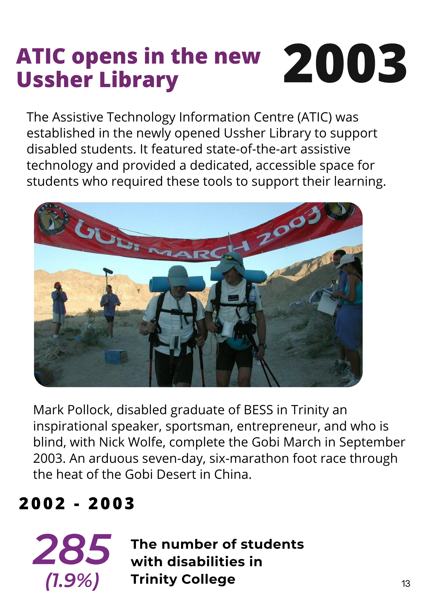
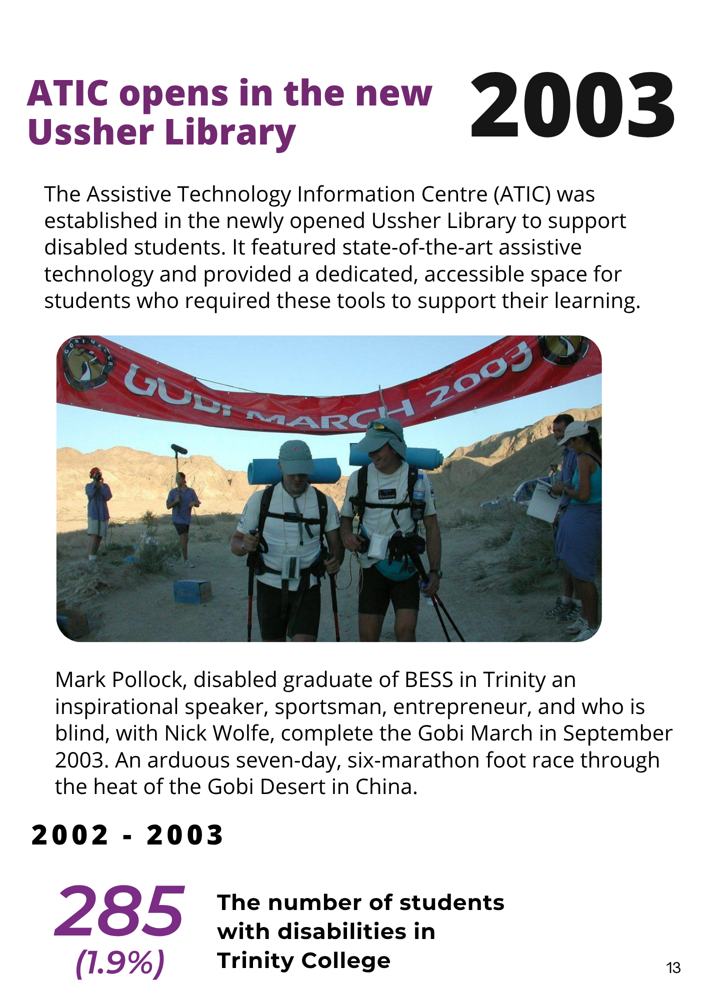
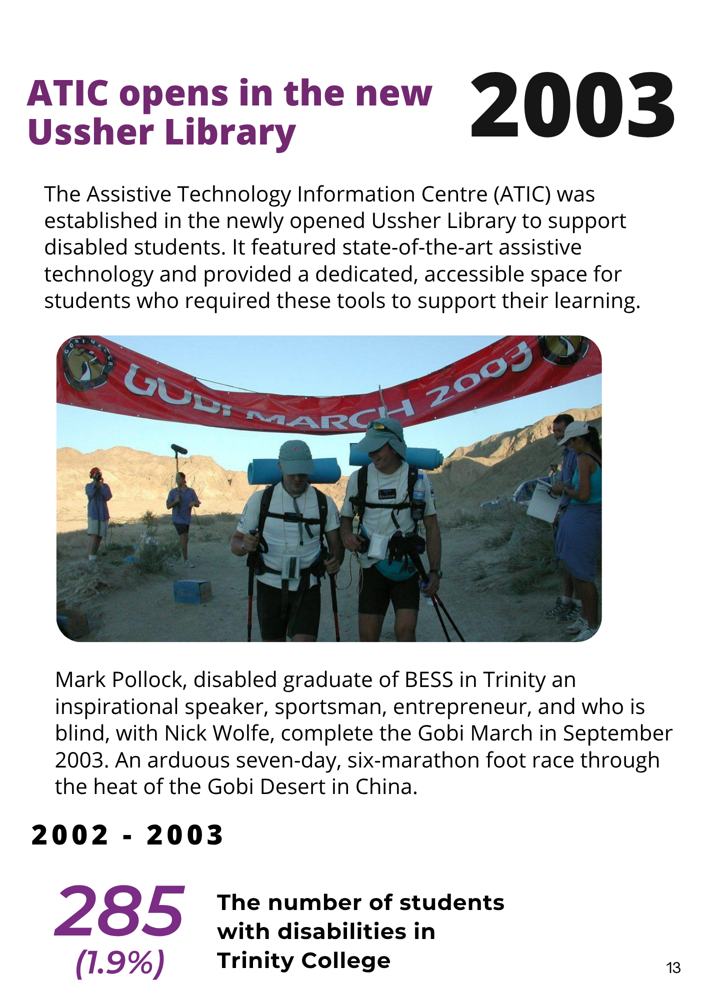

Pages 1 to 72 of the Trinity disAbility Service Journey
 



This commemorative publication celebrates 25 years of the Trinity disAbility Service at Trinity College Dublin. From its beginnings in a single office in 1995 to the opening of the state-of-the-art Trinity disAbility Hub in 2022, the Service has grown into a national and international leader in inclusive education.
Featuring personal reflections, landmark achievements, and student-led innovation, the timeline captures Trinity's commitment to access, belonging, and empowerment. It also introduces the bold 2025-2030 Action Plan focused on universal access, sustainability, and inclusive leadership.
